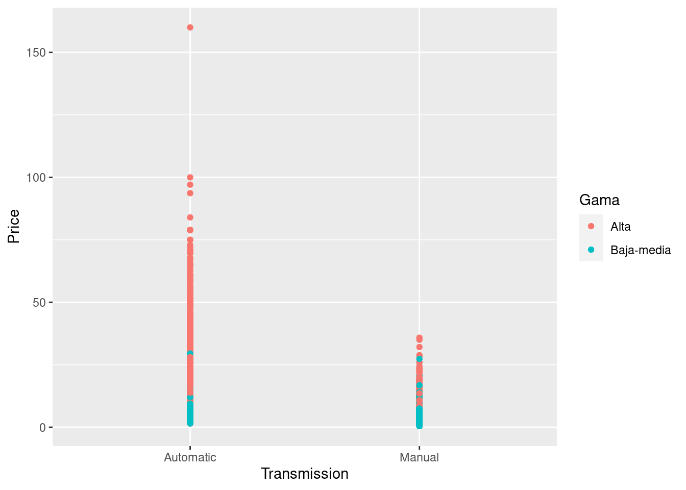
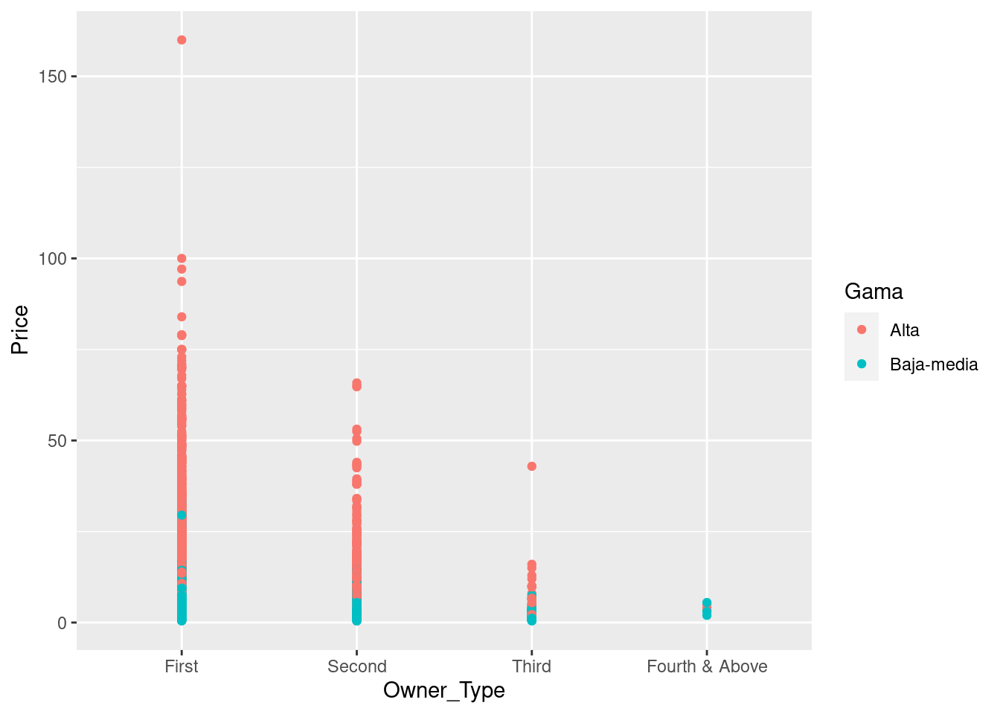

3 Análisis supervisado
3.1 Regresión logística
La división de los coches en gama baja-media y gama alta ha sido necesaria también para poder realizar la regresión logística sobre la nueva variable.
Se realizan las siguientes gráficas para visualizar los datos con la nueva variable:
table(data$Gama)##
## Alta Baja-media
## 1353 3358ggplot(data, aes(x = Power, y = Price, color = Gama)) + geom_point()ggplot(data, aes(x = Engine, y = Price, color = Gama)) + geom_point()ggplot(data, aes(x = Transmission, y = Price, color = Gama)) + geom_point()
ggplot(data, aes(x = Seats, y = Price, color = Gama)) + geom_point()ggplot(data, aes(x = Owner_Type, y = Price, color = Gama)) + geom_point()
Ahora, se van a aplicar los modelos con distintas covariables para buscar el mejor de ellos:
# modelos lineales generalizados estimados por MLE
logit <- glm(
Gama ~Power+Seats+Transmission+Owner_Type+Engine,
data = data,
family = binomial()
)
summary(logit)##
## Call:
## glm(formula = Gama ~ Power + Seats + Transmission + Owner_Type +
## Engine, family = binomial(), data = data)
##
## Deviance Residuals:
## Min 1Q Median 3Q Max
## -2.9207 -0.0737 0.1778 0.3066 4.0002
##
## Coefficients:
## Estimate Std. Error z value Pr(>|z|)
## (Intercept) -3.668e+00 4.878e+02 -0.008 0.9940
## Power -1.940e-02 2.370e-03 -8.183 2.76e-16 ***
## Seats4 1.186e+01 4.878e+02 0.024 0.9806
## Seats5 1.236e+01 4.878e+02 0.025 0.9798
## Seats6 -6.639e+00 6.166e+02 -0.011 0.9914
## Seats7 1.158e+01 4.878e+02 0.024 0.9811
## Seats8 9.311e+00 4.878e+02 0.019 0.9848
## Seats9 1.248e+01 4.878e+02 0.026 0.9796
## Seats10 1.171e+01 4.878e+02 0.024 0.9809
## TransmissionManual 8.966e-01 1.476e-01 6.073 1.25e-09 ***
## Owner_TypeSecond -6.252e-02 1.493e-01 -0.419 0.6755
## Owner_TypeThird 6.359e-01 3.765e-01 1.689 0.0912 .
## Owner_TypeFourth & Above 1.862e+00 1.113e+00 1.672 0.0945 .
## Engine -3.224e-03 2.365e-04 -13.630 < 2e-16 ***
## ---
## Signif. codes: 0 '***' 0.001 '**' 0.01 '*' 0.05 '.' 0.1 ' ' 1
##
## (Dispersion parameter for binomial family taken to be 1)
##
## Null deviance: 5649.7 on 4710 degrees of freedom
## Residual deviance: 2164.7 on 4697 degrees of freedom
## AIC: 2192.7
##
## Number of Fisher Scoring iterations: 15logit2 <- glm(
Gama ~Owner_Type+Seats+Transmission+Engine,
data = data,
family = binomial()
)
summary(logit2)##
## Call:
## glm(formula = Gama ~ Owner_Type + Seats + Transmission + Engine,
## family = binomial(), data = data)
##
## Deviance Residuals:
## Min 1Q Median 3Q Max
## -2.8689 -0.0929 0.1818 0.3542 4.0487
##
## Coefficients:
## Estimate Std. Error z value Pr(>|z|)
## (Intercept) -5.076e+00 4.895e+02 -0.010 0.9917
## Owner_TypeSecond -1.027e-02 1.475e-01 -0.070 0.9445
## Owner_TypeThird 7.748e-01 3.781e-01 2.049 0.0405 *
## Owner_TypeFourth & Above 2.289e+00 1.152e+00 1.987 0.0469 *
## Seats4 1.256e+01 4.895e+02 0.026 0.9795
## Seats5 1.327e+01 4.895e+02 0.027 0.9784
## Seats6 -5.571e+00 6.100e+02 -0.009 0.9927
## Seats7 1.297e+01 4.895e+02 0.026 0.9789
## Seats8 1.077e+01 4.895e+02 0.022 0.9824
## Seats9 1.508e+01 4.895e+02 0.031 0.9754
## Seats10 1.423e+01 4.895e+02 0.029 0.9768
## TransmissionManual 1.361e+00 1.326e-01 10.269 <2e-16 ***
## Engine -4.555e-03 1.894e-04 -24.056 <2e-16 ***
## ---
## Signif. codes: 0 '***' 0.001 '**' 0.01 '*' 0.05 '.' 0.1 ' ' 1
##
## (Dispersion parameter for binomial family taken to be 1)
##
## Null deviance: 5649.7 on 4710 degrees of freedom
## Residual deviance: 2231.2 on 4698 degrees of freedom
## AIC: 2257.2
##
## Number of Fisher Scoring iterations: 15logit3 <- glm(
Gama ~Power+Transmission+Engine,
data = data,
family = binomial()
)
summary(logit3)##
## Call:
## glm(formula = Gama ~ Power + Transmission + Engine, family = binomial(),
## data = data)
##
## Deviance Residuals:
## Min 1Q Median 3Q Max
## -2.8679 -0.0698 0.1875 0.3241 4.2115
##
## Coefficients:
## Estimate Std. Error z value Pr(>|z|)
## (Intercept) 9.3942879 0.3385829 27.746 < 2e-16 ***
## Power -0.0140166 0.0021605 -6.488 8.73e-11 ***
## TransmissionManual 0.6373511 0.1373724 4.640 3.49e-06 ***
## Engine -0.0040538 0.0001737 -23.345 < 2e-16 ***
## ---
## Signif. codes: 0 '***' 0.001 '**' 0.01 '*' 0.05 '.' 0.1 ' ' 1
##
## (Dispersion parameter for binomial family taken to be 1)
##
## Null deviance: 5649.7 on 4710 degrees of freedom
## Residual deviance: 2298.2 on 4707 degrees of freedom
## AIC: 2306.2
##
## Number of Fisher Scoring iterations: 6La interpretación de los p-valores es similar a la del modelo lineal. Podemos ver que las variables Engine,Power y Transmission son significativas en el modelo (p-valor mucho menor de 0.05), mientras que la variable Seats y Owner_Type influyen más en un modelo que en otro.
El mejor modelo es el explicado por las variables Power, Engine y Transmission. En cuanto a los coeficientes, la interpretación cambia. El modelo GLM no ajusta la variable respuesta sino una función de enlace. En el caso del modelo logit esta función es: \(η=log(p1−p)\), siendo \(p\) la probabilidad de que el individuo tome el valor “1” correspondiente a la gama alta en la variable dicotómica. Al cociente \(p/(1−p)\) se le conoce como odds ratio. Por tanto, los coeficientes del modelo logit se interpretan como el logaritmo del odds ratio. Si nos fijamos en el coeficiente de la variable Transmission (0.63) en el modelo 3, nos está indicando que el logaritmo del odds ratio de pertenecer al grupo de los coches de alta gama aumenta 0.63 unidades por cada unidad que aumenta la variable Transmission.
Antes de comenzar con las siguientes, lo que debemos hacer es definir una medida de precisión para contrastar los datos una vez que tengamos cada matriz de confusión y comparar los resultados que nos ofrecen cada uno de los métodos que empleemos. En nuestro caso, la variable respuesta no está muy bien balanceada:
summary(data$Gama)## Alta Baja-media
## 1353 3358Como vemos, los coches de gama alta se corresponden con el 30% aproximadamente y los de gama baja-media, el 70%. Supondremos que están más o menos equilibradas. No queremos dar más valor a identificar un tipo de coche frente al otro. Por tanto, se establecerá la siguiente medida de precisión. Esta es una medida de precisión que hemos creado para tener en cuenta todos los casos, tanto los falsos negativos como los falsos positivos. En realidad, se trata de la media geométrica de la sensitividad (recall) y la especificidad, y se define según la siguiente expresión:
\[\text{Medida de precisión}=\sqrt{\frac{TP}{FN+TP}·\frac{TN}{FP+TN}}=\sqrt{TPR·TNR} \] donde:
\(TP\) (true positive) son los coches de gama alta que acertamos que son de gama alta.
\(TN\) (true negative) son los coches de gama baja-media que acertamos que son de baja-media.
\(FP\) (false positive) son los coches de gama baja-media que nosotros predecimos como gama alta.
\(FN\) (false negative) son los coches de gana alta que nosotros predecimos como de gama baja-media.
\(TPR\) (sensitivity, recall, hit rate or true positive rate) es la sensitividad.
\(TNR\) (specificity, dplyr::selectivity or true negative rate) es la especificidad.
Cabe señalar que esta medida sólo será utilizada en futuros análisis cuando el problema requiera de una precisión de este tipo, mientras, se utilizará como métrica el accuracy.
medidaPrecision <- function(matrizDeConfusion){
return(sqrt(matrizDeConfusion[1,1]*matrizDeConfusion[2,2]/((matrizDeConfusion[1,2]+matrizDeConfusion[2,2])*(matrizDeConfusion[2,1]+matrizDeConfusion[1,1]))))
}3.2 Los k-vecinos más cercanos (k-NN: The k-nearest neighbours)
El método de los k-vecinos más cercanos consiste en clasificar a un nuevo individuo en función de la categoría de sus \(k\) vecinos más cercanos, es decir, clasificaremos un coche en gama alta o gama media-baja en función de la gama de los coches más cercanos a él (con cercanía nos referimos a similitud entre sus características).
# Ponemos una semilla para que siempre nos salga el mismo resultado (el algoritmo es aleatorio)
set.seed(07122020)trainX <- data[,c(2:10,13,14)]
preProcValues <- preProcess(x = trainX,method = c("center", "scale"))
preProcValues## Created from 4711 samples and 11 variables
##
## Pre-processing:
## - centered (6)
## - ignored (5)
## - scaled (6)Para poder realizar las predicciones, se entrena mediante cross-validation y así se estima el número óptimo de vecinos.
set.seed(400)
ctrl <- trainControl(method="repeatedcv",repeats = 3)
knnFit <- train(Gama ~ ., data = data[,c(2:10,13,14,15)], method = "knn", trControl = ctrl, preProcess = c("center","scale"), tuneLength = 20)
knnFit## k-Nearest Neighbors
##
## 4711 samples
## 11 predictor
## 2 classes: 'Alta', 'Baja-media'
##
## Pre-processing: centered (30), scaled (30)
## Resampling: Cross-Validated (10 fold, repeated 3 times)
## Summary of sample sizes: 4240, 4240, 4240, 4240, 4240, 4240, ...
## Resampling results across tuning parameters:
##
## k Accuracy Kappa
## 5 0.9133979 0.7882405
## 7 0.9133945 0.7892998
## 9 0.9110582 0.7844472
## 11 0.9080157 0.7778724
## 13 0.9053970 0.7721609
## 15 0.9045491 0.7700798
## 17 0.9045492 0.7699856
## 19 0.9049044 0.7700120
## 21 0.9041972 0.7677520
## 23 0.9049056 0.7685929
## 25 0.9047639 0.7677360
## 27 0.9049062 0.7678410
## 29 0.9044819 0.7665081
## 31 0.9039856 0.7648794
## 33 0.9029251 0.7617441
## 35 0.9024993 0.7604944
## 37 0.9015801 0.7579416
## 39 0.9023573 0.7594855
## 41 0.9024273 0.7591610
## 43 0.9029213 0.7599820
##
## Accuracy was used to select the optimal model using the largest value.
## The final value used for the model was k = 5.plot(knnFit)knnPredict <- predict(knnFit,newdata =dataTest[,c(2:10,13,14,15)])
data$Gama <- factor(data$Gama,levels=c("Alta","Baja-media"),labels=c("Alta","Baja-media"))
dataTest$Gama <- factor(dataTest$Gama,levels=c("Alta","Baja-media"),labels=c("Alta","Baja-media"))
confusionMatrix(knnPredict, dataTest$Gama )## Confusion Matrix and Statistics
##
## Reference
## Prediction Alta Baja-media
## Alta 275 39
## Baja-media 61 798
##
## Accuracy : 0.9147
## 95% CI : (0.8973, 0.9301)
## No Information Rate : 0.7136
## P-Value [Acc > NIR] : < 2e-16
##
## Kappa : 0.7873
##
## Mcnemar's Test P-Value : 0.03573
##
## Sensitivity : 0.8185
## Specificity : 0.9534
## Pos Pred Value : 0.8758
## Neg Pred Value : 0.9290
## Prevalence : 0.2864
## Detection Rate : 0.2344
## Detection Prevalence : 0.2677
## Balanced Accuracy : 0.8859
##
## 'Positive' Class : Alta
## accuracy <- mean(knnPredict == dataTest$Gama)
accuracy## [1] 0.9147485error = 1-accuracy
error## [1] 0.08525149table(knnPredict,dataTest$Gama)##
## knnPredict Alta Baja-media
## Alta 275 39
## Baja-media 61 798Por tanto, tomando el número óptimo de vecinos para realizar las predicciones, tenemos una precisión del 91’5%.
3.3 Árboles de decisión
Los árboles de decisión se construyen en base al cumplimiento o no de ciertos criterios en torno a las variables explicativas de los datos. Digamos que comenzamos comprobando un cierto criterio sobre la variable más explicativa. Si el criterio se cumple, nos vamos por una rama; si no, nos vamos por la otra. Por cada una de ellas, volveremos a comprobar otro cierto criterio, y así hasta llegar a las hojas. Las hojas clasifican a los datos en un grupo u otro. Todo esto lo explicaremos mucho mejor cuando construyamos nuestros árboles de decisión.
Primero veremos cuál es el valor óptimo de cp (parámetro de complejidad que combina la tasa de error con la profundidad del árbol). Para ello, construiremos un árbol muy complejo, y en función de los resultados que obtengamos lo “podaremos”.
arbolDecisionInfoComplejo <- rpart(data[,15] ~., data[,c(2:10,13,14)], cp=0.001, method="class",parms=list(split="information"))
plotcp(arbolDecisionInfoComplejo)
En el gráfico vemos que el mínimo se encuentra en torno al 0,0036, así que para obtener el mejor compromiso entre error y profundidad nos quedaremos con un valor de cp=0,004, porque tenemos que tener en cuenta que cuanto más pequeño sea este valor, más complejo y profundo será el árbol y menos error tendremos, sin embargo, corremos el riesgo de sobreajustar el modelo (problema de overfitting). Por otro lado, podemos usar dos criterios diferentes: el de información y el de Gini. Usaremos los dos y comprobaremos con cuál obtenemos una mayor precisión.
Comenzamos con el árbol de decisión utilizando el criterio de información.
arbolDecision <- rpart(data[,15] ~., data[,c(2:10,13,14)], cp=0.004, method="class",parms=list(split="information"))
arbolDecision## n= 4711
##
## node), split, n, loss, yval, (yprob)
## * denotes terminal node
##
## 1) root 4711 1353 Baja-media (0.287200170 0.712799830)
## 2) Engine>=1690 1548 291 Alta (0.812015504 0.187984496)
## 4) Power>=164.2 860 65 Alta (0.924418605 0.075581395)
## 8) Fuel_Type=Diesel 726 31 Alta (0.957300275 0.042699725)
## 16) Seats=4,5,6,8 533 7 Alta (0.986866792 0.013133208) *
## 17) Seats=7 193 24 Alta (0.875647668 0.124352332)
## 34) Engine>=2299.5 177 10 Alta (0.943502825 0.056497175)
## 68) kmpl>=10.955 166 0 Alta (1.000000000 0.000000000) *
## 69) kmpl< 10.955 11 1 Baja-media (0.090909091 0.909090909) *
## 35) Engine< 2299.5 16 2 Baja-media (0.125000000 0.875000000) *
## 9) Fuel_Type=Petrol 134 34 Alta (0.746268657 0.253731343)
## 18) Power>=180.515 96 9 Alta (0.906250000 0.093750000) *
## 19) Power< 180.515 38 13 Baja-media (0.342105263 0.657894737)
## 38) Power< 177.235 7 0 Alta (1.000000000 0.000000000) *
## 39) Power>=177.235 31 6 Baja-media (0.193548387 0.806451613) *
## 5) Power< 164.2 688 226 Alta (0.671511628 0.328488372)
## 10) Engine>=2117.5 420 68 Alta (0.838095238 0.161904762)
## 20) Power< 140.5 335 22 Alta (0.934328358 0.065671642)
## 40) Power< 137 229 6 Alta (0.973799127 0.026200873) *
## 41) Power>=137 106 16 Alta (0.849056604 0.150943396)
## 82) Power>=138.555 90 0 Alta (1.000000000 0.000000000) *
## 83) Power< 138.555 16 0 Baja-media (0.000000000 1.000000000) *
## 21) Power>=140.5 85 39 Baja-media (0.458823529 0.541176471)
## 42) kmpl>=13.59 31 6 Alta (0.806451613 0.193548387) *
## 43) kmpl< 13.59 54 14 Baja-media (0.259259259 0.740740741)
## 86) Engine< 2188.5 9 0 Alta (1.000000000 0.000000000) *
## 87) Engine>=2188.5 45 5 Baja-media (0.111111111 0.888888889) *
## 11) Engine< 2117.5 268 110 Baja-media (0.410447761 0.589552239)
## 22) Engine< 1796.5 22 0 Alta (1.000000000 0.000000000) *
## 23) Engine>=1796.5 246 88 Baja-media (0.357723577 0.642276423)
## 46) Power< 155.875 210 88 Baja-media (0.419047619 0.580952381)
## 92) Engine< 1798.5 28 1 Alta (0.964285714 0.035714286) *
## 93) Engine>=1798.5 182 61 Baja-media (0.335164835 0.664835165)
## 186) Engine>=1932 134 61 Baja-media (0.455223881 0.544776119)
## 372) kmpl< 16.88 76 26 Alta (0.657894737 0.342105263)
## 744) kmpl>=15.05 39 2 Alta (0.948717949 0.051282051) *
## 745) kmpl< 15.05 37 13 Baja-media (0.351351351 0.648648649) *
## 373) kmpl>=16.88 58 11 Baja-media (0.189655172 0.810344828)
## 746) kmpl>=20.19 8 0 Alta (1.000000000 0.000000000) *
## 747) kmpl< 20.19 50 3 Baja-media (0.060000000 0.940000000) *
## 187) Engine< 1932 48 0 Baja-media (0.000000000 1.000000000) *
## 47) Power>=155.875 36 0 Baja-media (0.000000000 1.000000000) *
## 3) Engine< 1690 3163 96 Baja-media (0.030350933 0.969649067)
## 6) Engine>=1353.5 1250 80 Baja-media (0.064000000 0.936000000)
## 12) Engine< 1366 30 0 Alta (1.000000000 0.000000000) *
## 13) Engine>=1366 1220 50 Baja-media (0.040983607 0.959016393)
## 26) Seats=4,7 59 19 Baja-media (0.322033898 0.677966102)
## 52) Power>=99.41 31 13 Alta (0.580645161 0.419354839)
## 104) Fuel_Type=Diesel 15 0 Alta (1.000000000 0.000000000) *
## 105) Fuel_Type=Petrol 16 3 Baja-media (0.187500000 0.812500000) *
## 53) Power< 99.41 28 1 Baja-media (0.035714286 0.964285714) *
## 27) Seats=5,8 1161 31 Baja-media (0.026701120 0.973298880)
## 54) Engine< 1496.5 416 27 Baja-media (0.064903846 0.935096154)
## 108) Engine>=1495.5 18 0 Alta (1.000000000 0.000000000) *
## 109) Engine< 1495.5 398 9 Baja-media (0.022613065 0.977386935) *
## 55) Engine>=1496.5 745 4 Baja-media (0.005369128 0.994630872) *
## 7) Engine< 1353.5 1913 16 Baja-media (0.008363826 0.991636174)
## 14) Seats=6 7 0 Alta (1.000000000 0.000000000) *
## 15) Seats=4,5,7,8 1906 9 Baja-media (0.004721931 0.995278069) *Aquí tenemos nuestro árbol de decisión. Como vemos, la primera pregunta (2 y 3) que le hará a un nuevo coche es si su motor es mayor o igual o menor a 1690. Si es mayor o igual a 1690, le preguntará si la potencia es inferior a 164.2 (preguntas 4 y 5); y si es que no, preguntará si el tipo de combustible es de diésel o petróleo(preg 8 y 9). Si es de diésel, entonces habrá que fijarse en el número de asientos que posea el coche. En este punto del árbol, si el número de asientos es 7, se volverá a clasificar por el motor, en función de si es mayor a 2299 en el que cerraremos la rama del árbol observando si la variable kmpl es inferior a 10. Así se ha llegado a un nodo hoja (marcados en asterisco) como por ejemplo llegar hasta la condición 69 y cumplirla, donde se clasifica el coche en gama media-baja o gama alta (dependiendo de la hoja en cuestión a la que haya llegado el coche). Como acabamos de señalar, las variables más informativas de nuestro árbol son el motor y la potencia de los coches. Tiene sentido que esto sea así, y que la primera característica sobre la que “pregunte” el árbol para clasificar a un nuevo coche sea Engine. ¿Por qué? Porque tal y como vimos, en la sección del análisis exploratorio de datos, justo era ésta la covariable más relacionada con gama de los coches. Así que los resultados obtenidos son perfectamente coherentes con todo el estudio realizado hasta el momento.
Aquí tenemos las preguntas que se han hecho a lo largo del árbol.
labels(arbolDecision, pretty=T)## [1] "root" "Engine>=1690" "Power>=164.2" "Fuel_Type=Disl"
## [5] "Seats=4,5,6,8" "Seats=7" "Engine>=2300" "kmpl>=10.96"
## [9] "kmpl< 10.96" "Engine< 2300" "Fuel_Type=Ptrl" "Power>=180.5"
## [13] "Power< 180.5" "Power< 177.2" "Power>=177.2" "Power< 164.2"
## [17] "Engine>=2118" "Power< 140.5" "Power< 137" "Power>=137"
## [21] "Power>=138.6" "Power< 138.6" "Power>=140.5" "kmpl>=13.59"
## [25] "kmpl< 13.59" "Engine< 2188" "Engine>=2188" "Engine< 2118"
## [29] "Engine< 1796" "Engine>=1796" "Power< 155.9" "Engine< 1798"
## [33] "Engine>=1798" "Engine>=1932" "kmpl< 16.88" "kmpl>=15.05"
## [37] "kmpl< 15.05" "kmpl>=16.88" "kmpl>=20.19" "kmpl< 20.19"
## [41] "Engine< 1932" "Power>=155.9" "Engine< 1690" "Engine>=1354"
## [45] "Engine< 1366" "Engine>=1366" "Seats=4,7" "Power>=99.41"
## [49] "Fuel_Type=Disl" "Fuel_Type=Ptrl" "Power< 99.41" "Seats=5,8"
## [53] "Engine< 1496" "Engine>=1496" "Engine< 1496" "Engine>=1496"
## [57] "Engine< 1354" "Seats=6" "Seats=4,5,7,8"Los errores que se cometen en cada hoja y el error total del árbol:
printcp(arbolDecision)##
## Classification tree:
## rpart(formula = data[, 15] ~ ., data = data[, c(2:10, 13, 14)],
## method = "class", parms = list(split = "information"), cp = 0.004)
##
## Variables actually used in tree construction:
## [1] Engine Fuel_Type kmpl Power Seats
##
## Root node error: 1353/4711 = 0.2872
##
## n= 4711
##
## CP nsplit rel error xerror xstd
## 1 0.7139690 0 1.000000 1.00000 0.0229528
## 2 0.0177384 1 0.286031 0.28603 0.0139298
## 3 0.0162602 3 0.250554 0.27494 0.0136808
## 4 0.0110865 4 0.234294 0.24908 0.0130737
## 5 0.0096083 6 0.212121 0.21951 0.0123293
## 6 0.0088692 10 0.173688 0.19956 0.0117915
## 7 0.0081301 12 0.155950 0.19586 0.0116884
## 8 0.0066519 13 0.147820 0.18551 0.0113933
## 9 0.0059128 14 0.141168 0.17221 0.0109993
## 10 0.0051737 17 0.123429 0.16482 0.0107727
## 11 0.0048780 18 0.118256 0.15743 0.0105401
## 12 0.0044346 23 0.093865 0.14043 0.0099802
## 13 0.0040000 29 0.064302 0.12712 0.0095146rpart.plot(arbolDecision, uniform=T);Vamos a comprobar la precisión del árbol con los mismos datos con los que ha sido construido.
predArbolInfo1 = predict(arbolDecision, data[,c(2:10,13,14)])
# Redondeamos la predicción para obtener un resultado 0-1
predArbolInfo1 = round(predArbolInfo1)
tArb1 = table(predArbolInfo1[,1], data[,15])
tArb2 = table(predArbolInfo1[,2], data[,15])
medidaPrecision(tArb2)## [1] 0.9745568Obtenemos una precisión del 97% con los datos de entrenamiento. Ahora, vamos a ver como clasifica nuestro árbol a nuevos coches. Para ello usaremos el conjunto de datos de testing y calcularemos la medida de precisión del resultado.
predArbolInfo2 = predict(arbolDecision,dataTest[,c(2:10,14,15)])
# Redondeamos la predicción para obtener un resultado 0-1
predArbolInfo2 = round(predArbolInfo2)
tArb3 = table(predArbolInfo2[,1], dataTest[,13])
tArb4 = table(predArbolInfo2[,2], dataTest[,13])
#medidaPrecision(tArb3)
medidaPrecision(tArb4)## [1] 0.9553525Con el conjunto de datos de testing se obtiene una precisión del 95%, lo que nos indica que nuestro árbol de decisión realiza buenas predicciones y no sobreajusta el modelo.
Por otro lado, vamos a ver cuál es la precisión que obtenemos utilizando el criterio de Ginni. Construimos un nuevo árbol:
arbolDecisionGini <- rpart(data[,15] ~., data=data[,c(2:10,13,14)], cp=0.004, parms=list(split="gini"))
arbolDecisionGini## n= 4711
##
## node), split, n, loss, yval, (yprob)
## * denotes terminal node
##
## 1) root 4711 1353 Baja-media (0.287200170 0.712799830)
## 2) Engine>=1690 1548 291 Alta (0.812015504 0.187984496)
## 4) Power>=164.2 860 65 Alta (0.924418605 0.075581395)
## 8) Fuel_Type=Diesel 726 31 Alta (0.957300275 0.042699725) *
## 9) Fuel_Type=Petrol 134 34 Alta (0.746268657 0.253731343)
## 18) Power>=180.515 96 9 Alta (0.906250000 0.093750000) *
## 19) Power< 180.515 38 13 Baja-media (0.342105263 0.657894737)
## 38) Power< 177.235 7 0 Alta (1.000000000 0.000000000) *
## 39) Power>=177.235 31 6 Baja-media (0.193548387 0.806451613) *
## 5) Power< 164.2 688 226 Alta (0.671511628 0.328488372)
## 10) Engine>=2117.5 420 68 Alta (0.838095238 0.161904762)
## 20) Power< 151 379 37 Alta (0.902374670 0.097625330)
## 40) Fuel_Type=Diesel 371 31 Alta (0.916442049 0.083557951)
## 80) Engine< 2498.5 332 17 Alta (0.948795181 0.051204819)
## 160) Power< 137 198 0 Alta (1.000000000 0.000000000) *
## 161) Power>=137 134 17 Alta (0.873134328 0.126865672)
## 322) Power>=138.555 118 1 Alta (0.991525424 0.008474576) *
## 323) Power< 138.555 16 0 Baja-media (0.000000000 1.000000000) *
## 81) Engine>=2498.5 39 14 Alta (0.641025641 0.358974359)
## 162) Engine>=2511 27 3 Alta (0.888888889 0.111111111) *
## 163) Engine< 2511 12 1 Baja-media (0.083333333 0.916666667) *
## 41) Fuel_Type=Petrol 8 2 Baja-media (0.250000000 0.750000000) *
## 21) Power>=151 41 10 Baja-media (0.243902439 0.756097561) *
## 11) Engine< 2117.5 268 110 Baja-media (0.410447761 0.589552239)
## 22) Engine< 1796.5 22 0 Alta (1.000000000 0.000000000) *
## 23) Engine>=1796.5 246 88 Baja-media (0.357723577 0.642276423)
## 46) Kilometers_Driven< 41183.5 43 11 Alta (0.744186047 0.255813953) *
## 47) Kilometers_Driven>=41183.5 203 56 Baja-media (0.275862069 0.724137931)
## 94) kmpl< 16.755 137 52 Baja-media (0.379562044 0.620437956)
## 188) kmpl>=14.09 72 26 Alta (0.638888889 0.361111111)
## 376) Power>=134.1 53 10 Alta (0.811320755 0.188679245)
## 752) Power< 147.555 45 2 Alta (0.955555556 0.044444444) *
## 753) Power>=147.555 8 0 Baja-media (0.000000000 1.000000000) *
## 377) Power< 134.1 19 3 Baja-media (0.157894737 0.842105263) *
## 189) kmpl< 14.09 65 6 Baja-media (0.092307692 0.907692308) *
## 95) kmpl>=16.755 66 4 Baja-media (0.060606061 0.939393939) *
## 3) Engine< 1690 3163 96 Baja-media (0.030350933 0.969649067)
## 6) Seats=6 7 0 Alta (1.000000000 0.000000000) *
## 7) Seats=4,5,7,8 3156 89 Baja-media (0.028200253 0.971799747)
## 14) Power>=132.16 7 2 Alta (0.714285714 0.285714286) *
## 15) Power< 132.16 3149 84 Baja-media (0.026675135 0.973324865)
## 30) Engine>=1353.5 1243 75 Baja-media (0.060337892 0.939662108)
## 60) Engine< 1366 29 0 Alta (1.000000000 0.000000000) *
## 61) Engine>=1366 1214 46 Baja-media (0.037891269 0.962108731) *
## 31) Engine< 1353.5 1906 9 Baja-media (0.004721931 0.995278069) *Vamos a comprobar el error que comete el árbol de decisión y qué aspecto tiene:
labels(arbolDecisionGini, pretty=T)## [1] "root" "Engine>=1690"
## [3] "Power>=164.2" "Fuel_Type=Disl"
## [5] "Fuel_Type=Ptrl" "Power>=180.5"
## [7] "Power< 180.5" "Power< 177.2"
## [9] "Power>=177.2" "Power< 164.2"
## [11] "Engine>=2118" "Power< 151"
## [13] "Fuel_Type=Disl" "Engine< 2498"
## [15] "Power< 137" "Power>=137"
## [17] "Power>=138.6" "Power< 138.6"
## [19] "Engine>=2498" "Engine>=2511"
## [21] "Engine< 2511" "Fuel_Type=Ptrl"
## [23] "Power>=151" "Engine< 2118"
## [25] "Engine< 1796" "Engine>=1796"
## [27] "Kilometers_Driven< 4.118e+04" "Kilometers_Driven>=4.118e+04"
## [29] "kmpl< 16.76" "kmpl>=14.09"
## [31] "Power>=134.1" "Power< 147.6"
## [33] "Power>=147.6" "Power< 134.1"
## [35] "kmpl< 14.09" "kmpl>=16.76"
## [37] "Engine< 1690" "Seats=6"
## [39] "Seats=4,5,7,8" "Power>=132.2"
## [41] "Power< 132.2" "Engine>=1354"
## [43] "Engine< 1366" "Engine>=1366"
## [45] "Engine< 1354"printcp(arbolDecisionGini)##
## Classification tree:
## rpart(formula = data[, 15] ~ ., data = data[, c(2:10, 13, 14)],
## parms = list(split = "gini"), cp = 0.004)
##
## Variables actually used in tree construction:
## [1] Engine Fuel_Type Kilometers_Driven kmpl
## [5] Power Seats
##
## Root node error: 1353/4711 = 0.2872
##
## n= 4711
##
## CP nsplit rel error xerror xstd
## 1 0.7139690 0 1.00000 1.00000 0.0229528
## 2 0.0177384 1 0.28603 0.29268 0.0140761
## 3 0.0162602 3 0.25055 0.27273 0.0136302
## 4 0.0155211 4 0.23429 0.27273 0.0136302
## 5 0.0073910 6 0.20325 0.22764 0.0125399
## 6 0.0072062 9 0.17886 0.17591 0.0111105
## 7 0.0059128 13 0.15004 0.16408 0.0107497
## 8 0.0044346 14 0.14412 0.15004 0.0103011
## 9 0.0040000 22 0.10791 0.13378 0.0097507rpart.plot(arbolDecisionGini, uniform=T)
La precisión que se obtiene con los datos de entrenamiento es la siguiente:
predArbolGini1 = predict(arbolDecisionGini,data[,c(2:10,13,14)])
# Redondeamos la predicción para obtener un resultado 0-1
predArbolGini1 = round(predArbolGini1)
tArb5 = table(predArbolGini1[,1], data[,15])
tArb6 = table(predArbolGini1[,2], data[,15])
medidaPrecision(tArb6)## [1] 0.9587796Se obtiene un accuracy del 95%. Además, con el conjunto de datos de testing se obtiene la siguiente métrica:
predArbolGini2 = predict(arbolDecisionGini, dataTest[,c(2:10,14,15)])
predArbolGini2=round(predArbolGini2)
tArb7 = table(predArbolGini2[,1],dataTest[,13])
tArb8 = table(predArbolGini2[,2],dataTest[,13])
pArb1 = medidaPrecision(tArb7)
pArb2 = medidaPrecision(tArb8)
pArb2## [1] 0.9329822Comprobamos que tanto con el conjunto de entrenamiento como con el conjunto de prueba las precisiones que obtenemos son muy buenas también con Gini, en este caso se obtiene un 93% en test por lo que consideramos buenos árboles de decisión. Distinguiendo entre el árbol de información y el del criterio de Gini, seleccionamos el de información por cometer menos error y ajustarse más a las nuevas entradas que se le proporcionan.
3.4 Bosques aleatorios
Un bosque de árboles o bosque aleatorio es un conjunto de árboles de decisión tales que los nodos de cada árbol dependen de los valores de un subconjunto de variables muestreado aleatoriamente. Es decir, para construir cada árbol se escogen un subconjunto del total de las variables explicativas. Cuando tenemos el bosque construido lo que hacemos es “pasar” los nuevos datos por todos los árboles del bosque. Cada árbol clasificará al dato en una clase, y el bosque, finalmente, clasificará al dato en la clase en la que más árboles hayan coincidido.
Una vez que sabemos qué es un bosque aleatorio cabe preguntarse cuál es el número óptimo de árboles que debemos construir y cuántas variables queremos que se seleccionen para cada uno de los árboles. Para descubrir esto, probaremos con distintos valores de cada uno y nos quedaremos con el que mejor medida de precisión nos proporcione.
Durante todo el proceso de análisis se han evaluado cada una de las métricas. Al obtener una precisión del 97% en entrenamiento y 95% en testing en árboles de decisión, se ha hecho constatar que no seleccionaremos como mejor método para predecir el de bosques aleatorios o random forest ya que al obtener esa precisión tan alta, siempre será mejor tener un árbol que un bosque de árboles en cuanto a complejidad y coste. No obstante, se realizan algunos cálculos para estimar cual sería la precisión y las predicciones de este bosque.
set.seed(123)
modelo <- ranger(
formula = as.factor(data[,15]) ~ .,
data = data[,c(2:10,13,14)],
num.trees = 10,
seed = 123
)predicciones <- predict(modelo, data = dataTest[,c(2:10,14,15)])
predicciones## Ranger prediction
##
## Type: Classification
## Sample size: 1173
## Number of independent variables: 11#test_rmse <- sqrt(mean((predicciones - as.factor(data[,13]))^2))
#paste("Error de test (rmse) del modelo (log): ", round(test_rmse,2))3.5 Máquinas de vectores de soporte (SVM: Support Vector Machines)
Vamos a aplicar SVM a nuestros datos. Las SVM constituyen un método basado en aprendizaje para la resolución de problemas de clasificación y regresión. En ambos casos, esta resolución se basa en una primera fase de entrenamiento (donde se les informa con múltiples ejemplos ya resueltos, en forma de pares {problema, solución}) y una segunda fase de uso para la resolución de problemas. En ella, las SVM se convierten en una “caja negra” que proporciona una respuesta (salida) a un problema dado (entrada).
svmdata = data[,c(2:10,13,14,15)]Lo primero que hacemos es separar el conjunto de datos en los conjuntos de train y test, estableciendo el 70% de ellos para train y el 30% para test.
ind <- sample(2,nrow(svmdata), replace= TRUE, prob = c(0.7,0.3))
trainSet <- svmdata[ind==2,]
testSet <- svmdata[ind==1,]Realizamos el entrenamiento del modelo. Vamos a probar los distintos kernels para comprobar cual de ellos aprende mejor.
3.5.1 SVM con kernel radial
Suponiendo que una observación del conjunto de datos de test se encuentra alejada de una observación de entrenamiento en términos de distancia euclídea, el kernel radial tiene un comportamiento muy local, en el sentido de que sólo las observaciones de entrenamiento cercanas a una observación de test tendrán efecto sobre su clasificación. Es importante tener en cuenta que una mayor flexibilidad no tiene porque mejorar las predicciones debido a que un modelo muy flexible puede ajustarse demasiado a los datos de entrenamiento.
Primero, entrenamos el modelo:
model <- svm(Gama~., data = trainSet, kernel="radial")
prediccion <- predict(model, newdata= testSet[-12])Ahora, se muestra el resultado mediante la matriz de confusión:
MC <- table(testSet[,12], prediccion)
MC## prediccion
## Alta Baja-media
## Alta 845 96
## Baja-media 139 2222accuracy <- (sum(diag(MC)))/(sum(MC))
accuracy## [1] 0.928831Como se puede observar, el modelo clasifica bien en un 92% de los casos, por lo que las predicciones son realmente buenas.
3.5.2 SVM con kernel lineal
El kernel lineal cuantifica la similitud de un par de observaciones usando la correlación de Pearson. Con un kernel lineal, el clasificador obtenido es equivalente a un support vector classifier. Se entrena y se muestran los resultados a continuación:
model2 <- svm(Gama~., data = trainSet, kernel="linear")
prediccion <- predict(model2, newdata= testSet[-12])
MC <- table(testSet[,12], prediccion)
MC## prediccion
## Alta Baja-media
## Alta 848 93
## Baja-media 140 2221accuracy <- (sum(diag(MC)))/(sum(MC))
accuracy## [1] 0.9294367Se obtiene un accuracy del 92%, por lo que predice con bastante exactitud al igual que el kernel radial.
3.5.3 SVM con kernel sigmoidal
Ahora, con el kernel sigmoidal:
model3 <- svm(Gama~., data = trainSet, kernel="sigmoid")
prediccion <- predict(model3, newdata= testSet[-12])
MC <- table(testSet[,12], prediccion)
MC## prediccion
## Alta Baja-media
## Alta 848 93
## Baja-media 142 2219accuracy <- (sum(diag(MC)))/(sum(MC))
accuracy## [1] 0.928831Se obtiene un accuracy del 92%, por lo que predice con bastante exactitud al igual que el kernel radial y lineal.
3.5.4 SVM con kernel polinomial
El kernel polinómico de grado d (siendo d>1) permite un límite de decisión mucho más flexible. Cuando un support vector classifier se combina con un kernel no lineal, se obtiene un support vector machine. Se entrena el modelo y se muestran los resultados:
model4 <- svm(Gama~., data = trainSet, kernel="polynomial")
prediccion <- predict(model4, newdata= testSet[-12])
MC <- table(testSet[,12], prediccion)
MC## prediccion
## Alta Baja-media
## Alta 322 619
## Baja-media 26 2335accuracy <- (sum(diag(MC)))/(sum(MC))
accuracy## [1] 0.8046638Tanto el kernel radial como el lineal y el sigmoidal obtienen la misma métrica, por lo tanto esos hiperplanos se adaptan correctamente a nuestros datos.